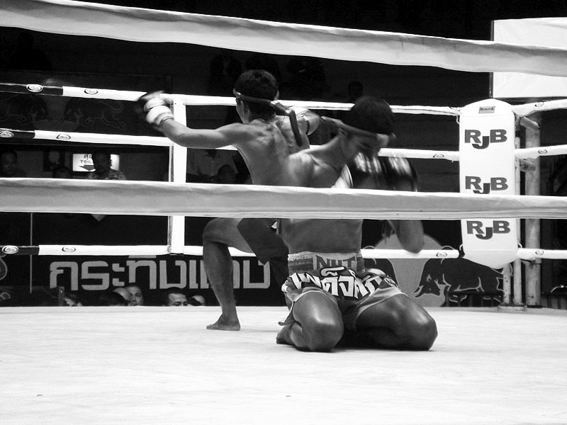
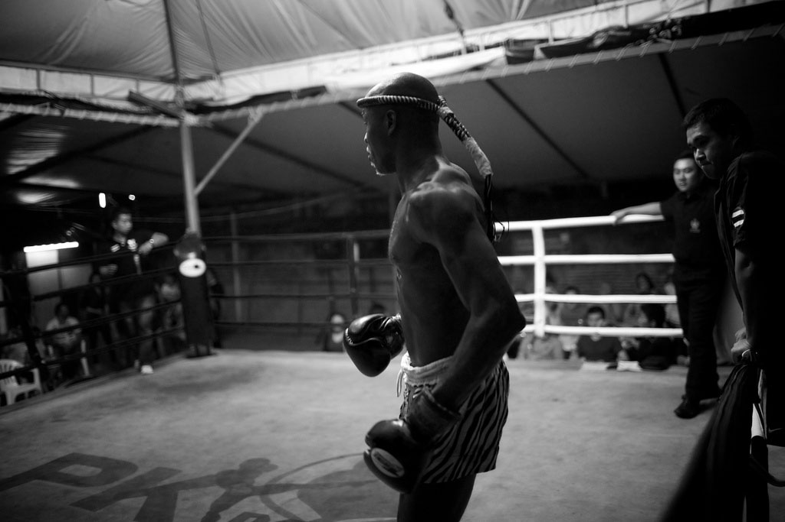
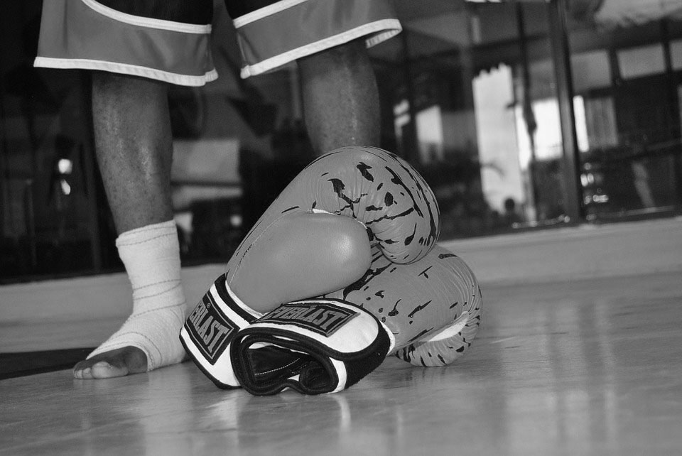
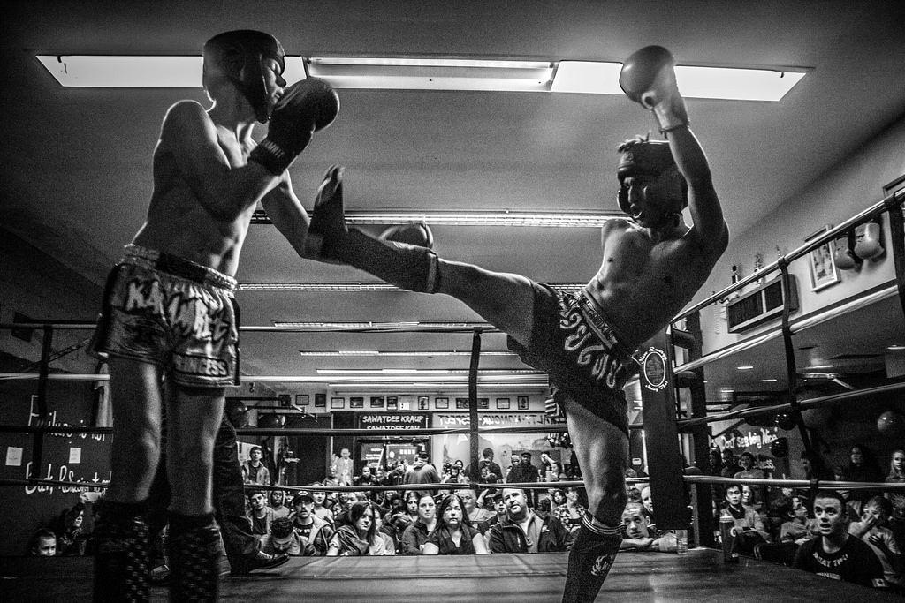

Le Muay Thai, appelé aussi Boxe Thaïlandaise ou Thai Boxing .
Sport de combat originaire de Thaïlande. Le Muay Thai est tiré des pratiques martiales ancestrales du Muay Boran (Boxe Traditionnelle). Le Muay Thai, serait vieux de deux mille ans selon les représentations des thaïlandais.
Wai Khru

Le rituel
Le Wai Khru est une sorte de remerciement à l'organisateur de la compétition ou, comme par le passé, une façon de rendre hommage au Roi..
Il symbolise aussi la reconnaissance du boxeur envers le professeur qui l'a formé. Il est également un moyen de concentration avant le combat. Si nous étudions les racines de la culture Thaïlandaise, nous découvrirons que le Wai Khru n'est pas seulement un moyen de remerciement à son professeur, mais également à tous les maîtres et enseignants depuis la nuit des temps.
Les régles

Le ring
Le ring, qui mesure entre 5 et 7 mètres de côté, doit être entouré de 3 rangés de cordes minimum. Le plancher sera doublé d’un matériau moelleux et élastique, de 4 cm d’épaisseur, et recouvert de toile.
Les boxeurs (nak-muays) se présenteront dans une tenue appropriée au combat, se composant d’un short et d’un suspensoir pour la coquille. Ils doivent combattre torse nu et pieds nus, mais sont autorisés à porter des chevillères. Ils peuvent nouer un ruban appelé « prajeet » autour d’un ou des deux bras.
Le matériel

Obligatoire pour tout nak-muays
Selon les anciennes coutumes, les Thaïlandais des campagnes étaient vêtus de seulement d'un pantalon en coton court, ample, descendant jusqu'au genoux le GUNG GAENG KAA GUAY et d'un PAA KAO MAA une sorte de pagne de 1m à 1m50 couvert généralement de motifs à carreaux enroulé et noué autour de la taille.
Ces deux vêtements ne couvraient que la partie inférieur du corps, et étaient aussi bien utilisés dans le quotidien comme serviette, couvre tête, ceinture….que lors des combats.
Bien être

Garder la forme
Les bienfaits de cette discipline
1. Lutter contre le stress
2. Améporer le système cardio-vasculaire
Renforcer de la ceinture abdominale et des fessiers.